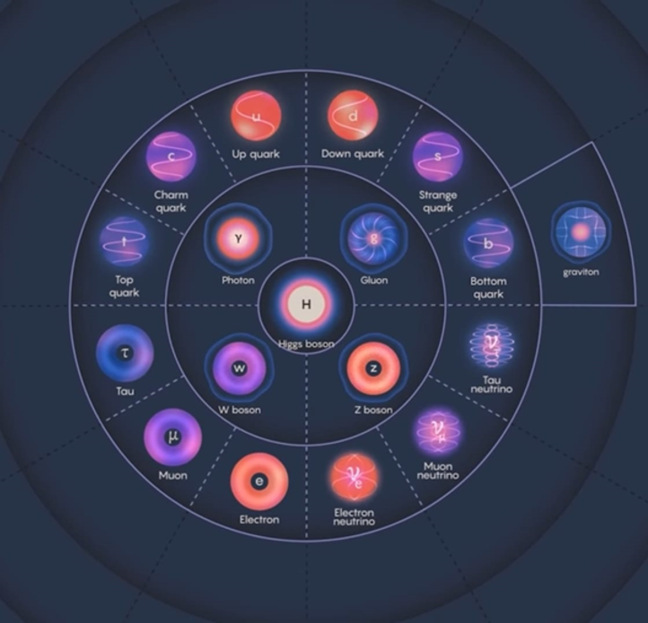

Vật lý hạt
Giới thiệu chung
Vật lý Hạt (Particle Physics), hay còn được gọi là Vật lý Năng lượng cao là ngành khoa học nghiên cứu các thành phần căn bản nhất cấu tạo nên vật chất trong vũ trụ, cũng như các tương tác cơ bản giữa chúng.
Atomos, thuật ngữ được ra bởi Democritus trong khoảng năm 450 TCN, đánh dấu sự phát triển của hình thức nguyên tử luận và khái niệm vật chất được tạo bởi các phần tử nhỏ nhất mà được coi là không thể phân chia được nữa. Tuy được phát triển từ khá sớm và được duy trì qua thiên niên kỷ, tiến trình nghiên cứu nguyên tử chỉ thực sự bắt đầu khi ngành hóa học phát triển, nổi bật là vào năm 1803, John Dalton khôi phục thuyết nguyên tử để giải thích các định luật hóa học.
Quá trình nghiên cứu các hạt nhỏ nhất có những tiến bộ rõ rệt vào cuối thế kỷ XIX và đầu thế kỷ XX. Năm 1897, nhà vật lý Joseph John Thomson đã phát hiện ra electron. Năm 1905, Albert Einstein giải thích hiệu ứng quang điện bằng khái niệm lượng tử ánh sáng photon. Năm 1919, Ernest Rutherford phát hiện ra hạt proton, hạt cấu tạo nên hạt nhân nguyên tử được ông phát hiện vào năm 1911. Năm 1928, Paul Dirac viết phương trình Dirac hợp nhất cơ học lượng tử và thuyết tương đối hẹp, dự đoán sự tồn tại của phản vật chất positron, sau này được tìm thấy bởi Carl Anderson vào năm 1932, cũng là năm nhà vật lý James Chadwick phát hiện ra hạt neutron.
Với sự phát triển của công nghệ, các hạt cơ bản dần được tìm ra và được phát triển thành Mô hình chuẩn (Standard Model) của các hạt vật chất và các hạt truyền tương tác. Vật lý hạt hiện đại gắn liền với việc xử lý dữ liệu lớn, tính toán hiệu năng cao và các siêu công trình kỹ thuật, điển hình là khu phức hợp máy gia tốc hạt ở Trung tâm Vật lý Hạt nhân Châu Âu (Conseil Européenne pour la Recherche Nucléaire, CERN). Những nỗ lực đẩy lùi giới hạn nghiên cứu này không chỉ giúp con người hiểu về các hạt cơ bản, mà còn thúc đẩy sự ra đời của nhiều công nghệ đột phá phục vụ đời sống con người, điển hình là sự ra đời của World Wide Web (CERN), công nghệ chụp ảnh y học (PET, MRI) đến các máy gia tốc ứng dụng trong điều trị ung thư và khoa học vật liệu.
Nhìn chung, vật lý hạt là một mũi nhọn của khoa học cơ bản, đòi hỏi sự đầu tư quy mô lớn và hợp tác quốc tế sâu rộng. Bằng việc thách thức các giới hạn tri thức về cấp độ vi mô nhất của tự nhiên, vật lý hạt không chỉ giải mã bản chất của vật chất mà còn đóng vai trò là động cơ thúc đẩy đổi mới công nghệ, khẳng định vị thế tiên phong của con người trong hành trình chinh phục vũ trụ.

Nguồn: A Video Tour of the Standard Model, Quanta Magazine.
Các hướng nghiên cứu
Vật lý Hạt có thể được chia thành các hướng nghiên cứu dựa trên cách tiếp cận:
Vật lý Hạt Thực nghiệm (Experimental Particle Physics)
Hướng nghiên cứu này tập trung thu thập và phân tích dữ liệu thực tế từ các hiện tượng tự nhiên hoặc thí nghiệm nhân tạo. Lĩnh vực này gồm hai nhánh chính: vật lý gia tốc sử dụng các cỗ máy va chạm năng lượng cao như LHC hay Tevatron để đập vỡ hạt ở thang năng lượng TeV và tìm kiếm hạt mới; và vật lý phi gia tốc khai thác các hiện tượng tự nhiên thông qua việc ghi nhận tia vũ trụ, neutrino, truy tìm vật chất tối và kiểm chứng các phân rã hiếm.
Vật lý Hạt Lý thuyết (Theoretical Particle Physics)
Lĩnh vực này xây dựng các mô hình toán học để giải thích kết quả thực nghiệm và dự đoán hiện tượng mới. Nghiên cứu lý thuyết trải dài từ tính toán chính xác các tương tác trong Mô hình Chuẩn (QED, QCD), đề xuất các lý thuyết mở rộng ngoài Mô hình Chuẩn như siêu đối xứng, chiều không gian bổ sung hay bản chất neutrino, đến các nghiên cứu nền tảng sâu hơn như lý thuyết trường lượng tử, lý thuyết dây và lý thuyết M nhằm hợp nhất lực hấp dẫn với cơ học lượng tử.
Vật lý Hạt Tính toán (Computational Particle Physics)
Đóng vai trò cầu nối giữa lý thuyết và thực nghiệm, mảng tính toán sử dụng siêu máy tính để giải các bài toán phức tạp. Các nhà nghiên cứu giải trực tiếp các phương trình tương tác mạnh phi nhiễu loạn bằng Động lực học lượng tử màu tọa độ lưới (Lattice QCD), phát triển các trình mô phỏng sự kiện Monte Carlo (Pythia, Geant4), đồng thời ứng dụng học máy và AI để xử lý, phân loại sự kiện và tái tạo quỹ đạo hạt từ hàng petabyte dữ liệu thực nghiệm.
Kỹ thuật & Công nghệ Hạt (Instrumentation & Accelerator Physics)
Mảng nghiên cứu này tập trung vào khía cạnh phần cứng và hạ tầng kỹ thuật phục vụ cho thực nghiệm. Lĩnh vực bao gồm vật lý máy gia tốc chịu trách nhiệm thiết kế, tối ưu hóa chùm hạt năng lượng cao bằng công nghệ nam châm siêu dẫn và buồng cộng hưởng tần số vô tuyến, cùng với nghiên cứu phát triển máy dò (detectors) gồm chế tạo các cảm biến bán dẫn, chất nhấp nháy và máy dò khí thế hệ mới có khả năng hoạt động chính xác trong môi trường bức xạ năng lượng cao.
Các chủ đề nghiên cứu
- Quantum Chromodynamics (QCD, Sắc động học lượng tử) và hadrons: strong interaction, proton structure, hadron spectroscopy, quark model, lattice QCD,...
- Electroweak physics.
- Higgs physics.
- Flavor và CP: CP violation, B physics, charm physics, kaon physics, tau physics and rare decays.
- New particle searches: supersymmetry, additional Higgs bosons, leptoquarks, heavy neutral leptons, compositeness, extra dimensions and other hypothetical particles.
- Dark sectors: Dark matter physics.
- Particle cosmology: inflation, baryogenesis, matter antimatter asymmetry, cosmological neutrinos, dark matter, dark energy and physics of the early Universe.
- Detector physics.
- Accelerator physics.
- Astroparticle physics: cosmic rays, gamma-ray astronomy, neutrinos...
- …
Too much
Các tạp chí khoa học
- Physical Review D (PRD)
- Physical Review Letters (PRL)
- Journal of High Energy Physics (JHEP)
- The European Physical Journal C (EPJC)
- Physics Letters B
- Nuclear Physics B
- Annual Review of Nuclear and Particle Science
- …
Các bạn có thể tìm kiếm và truy cập các bài báo khoa học về vật lý hạt tại các hệ thống sau: